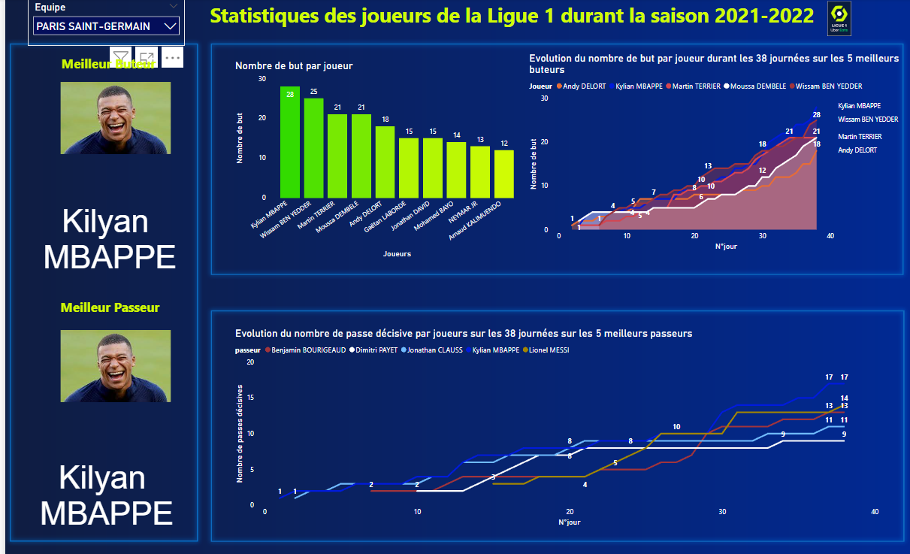
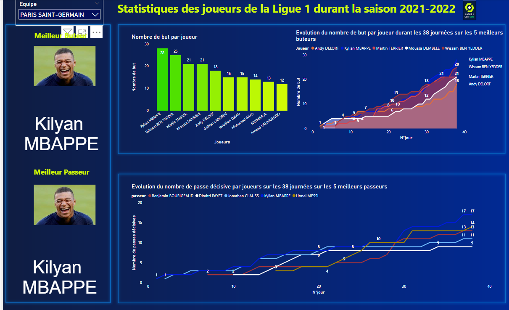

Bienvenue sur la page dédiée à mes compétences en PowerBi et Visualisation de Données, intégrées dans mon travail. Ces compétences sont essentielles en science des données et au parcours VCOD du BUT STID.
Durant mon parcours, j'ai maîtrisé divers langages de programmation et outils de gestion et visualisation de données.
Dans les sections suivantes, je présenterai plusieurs projets démontrant ma capacité à visualiser des données et plus encore. Vous y trouverez des exemples de code, des captures d'écran, et d'autres preuves tangibles de mon travail.
Ces projets illustrent ma maîtrise technique et ma capacité à appliquer ces compétences pour résoudre des problèmes réels et fournir des insights précieux. J'espère que ces exemples seront illustratifs de mes compétences.
 

Ce texte est associé aux images ci-contre. Il peut décrire les projets ou fournir des informations supplémentaires sur le contenu visualisé dans les images.